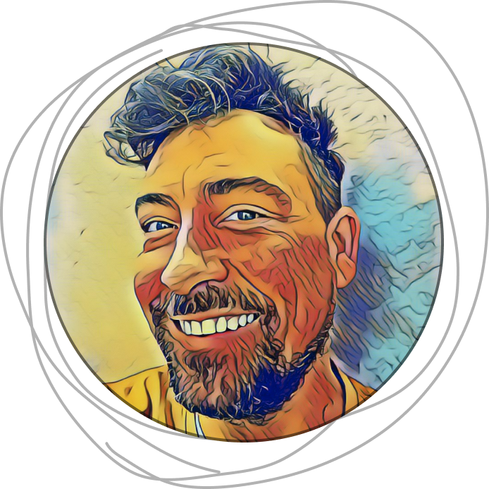

Me dedico al diseño digital, realizando productos creativos
Soy diseñador UX/UI con un amplio background en diseño gráfico e industrial.
Bajo el método Design Thinking, genero ideas innovadoras para centrar la eficacia
Mis proyectos están planteados desde el razonamiento User first, es decir, el usuario
Metodología Agile: Scrum, Design Sprint, Design Thinking
Bajo el método Design Thinking, genero ideas innovadoras para centrar la eficacia
Mis proyectos están planteados desde el razonamiento User first, es decir, el usuario
(Marzo 2010 - Octubre 2021): Diseñador gráfico de piezas ad-hoc y maquetación de folleto
(Marzo 2009 - Enero 2010): Diseñador de packaging en LABORATORIOS LILLY.
(Marzo 2006 - Marzo 2008): Decorador/Diseñador en GRUPO MUNRECO (VICEROY).
Ganador de los Premios Aurelio Blanco de Diseño Industrial Comunidad de Madrid en 2009,
2008 - 2010: Curso de Autocad (150hs) Datanálisis (Madrid),Curso de Diseño y Producción
2003 - 2006: Diseño Industrial. Escuela de Arte número 12 de Madrid.